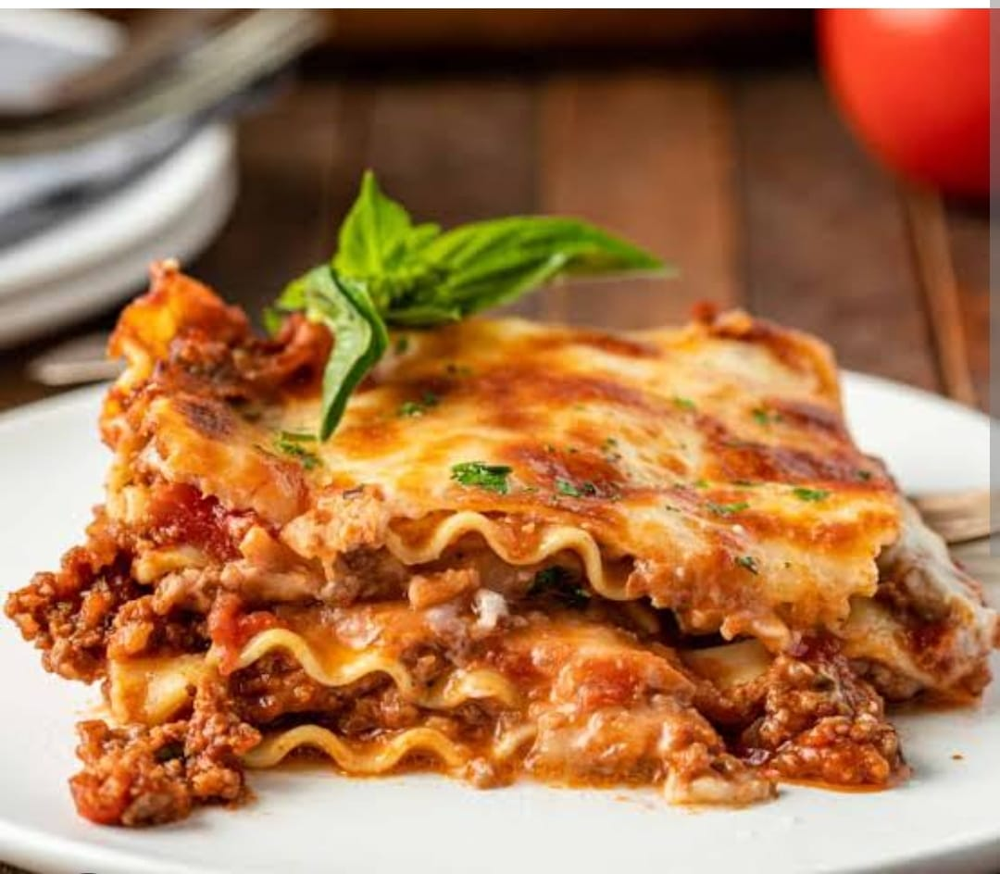
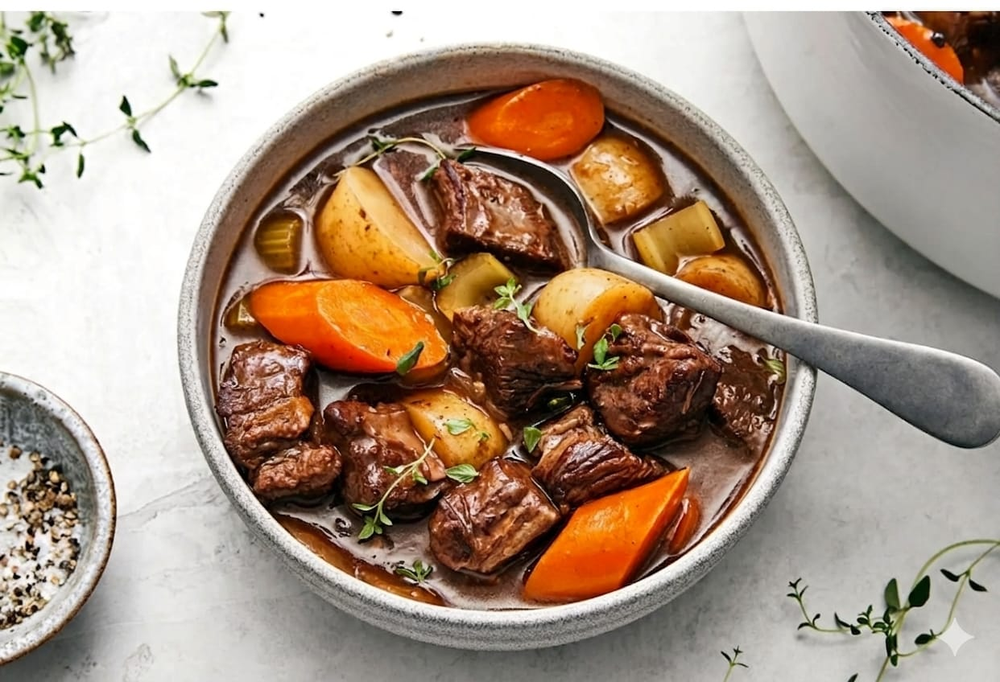
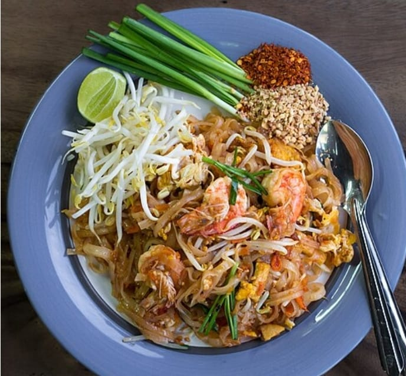
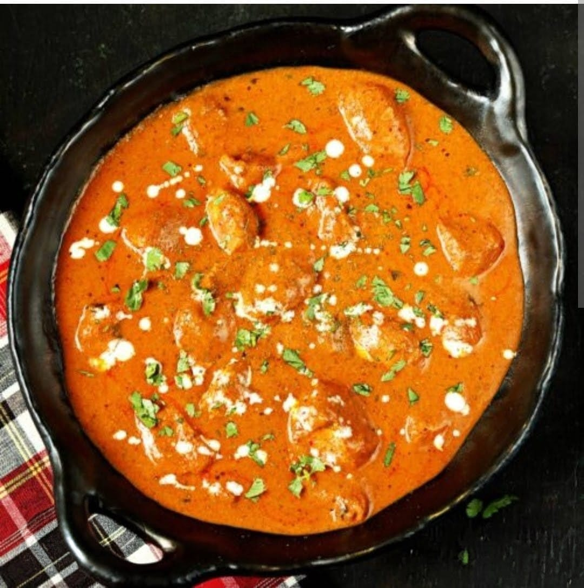
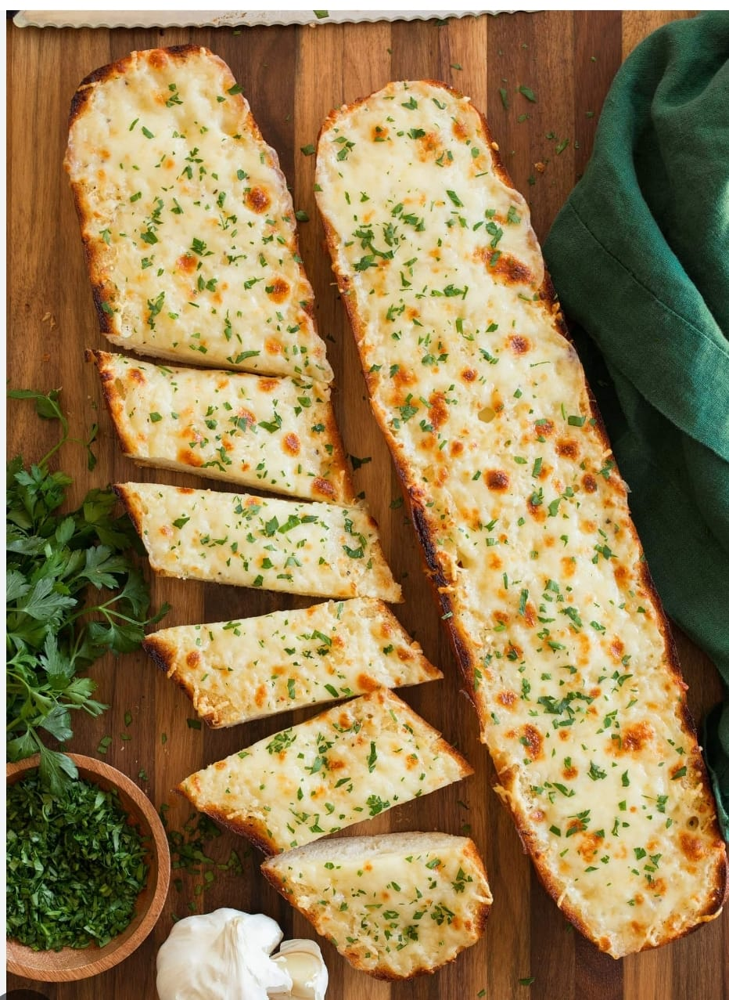
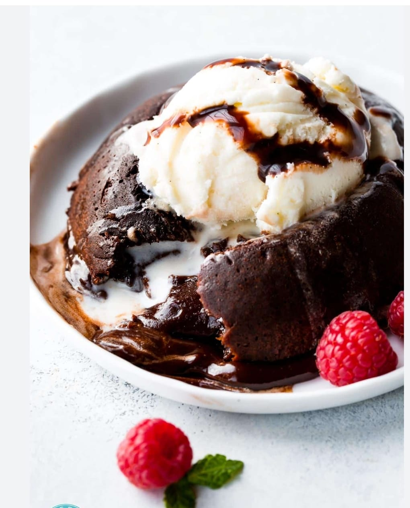
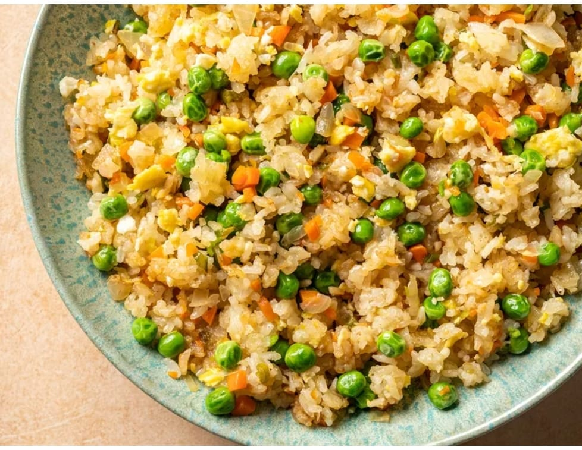
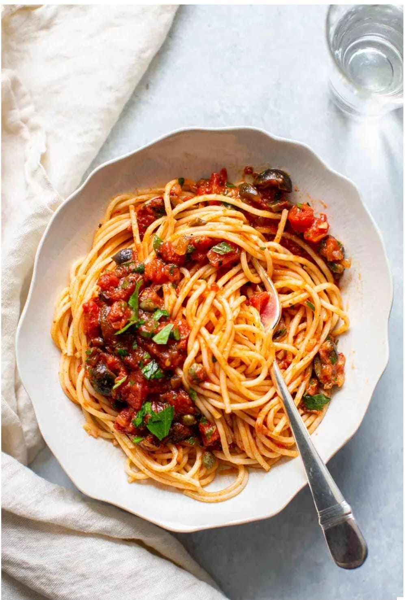

⭐ Reader Favourite
A Truly Great
A Truly Great
Recipe Generator
The stuff food dreams are made of — crispy, saucy, cheesy perfection.
Get the RecipeFeatured This Week
View All →
Italian · Pasta
The Best Homemade Lasagna

Beef · Comfort Food
Rich & Hearty Beef Stew

Thai · Quick
Authentic Pad Thai

Indian · Curry
Creamy Butter Chicken

Sides · Bread
Cheesy Garlic Bread

Desserts · Chocolate
Molten Chocolate Lava Cakes
Quick & Easy Weeknight Dinners
View All →
Asian · Rice
Better-Than-Takeout Fried Rice
Mexican · Quick
Crispy Beef Tacos

Vegetarian · Pasta
Creamy Mushroom Pasta
🥤 New Category
Sip Something Special
Craft mocktails, refreshing coolers & warming brews — all made at home.
🥭
'">
Indian · Mocktail
Mango Lassi

Indian · Hot Drink
Masala Chai

Italian · Mocktail
Sparkling Limonata

Japanese · Hot/Iced
Matcha Rose Latte